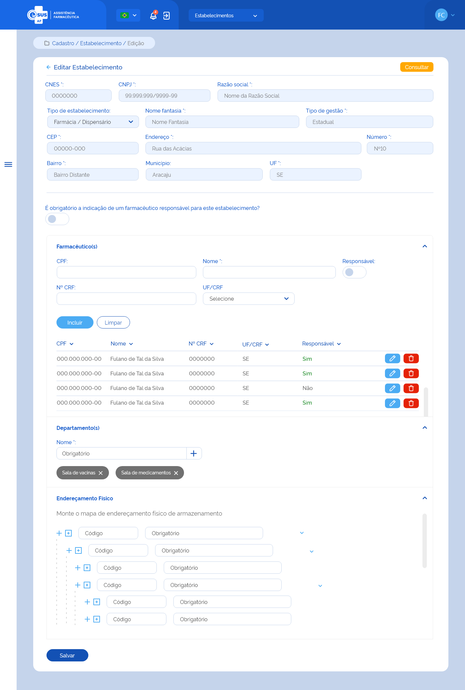

ETE017 - Editar Estabelecimento de Saúde
Descrição (modelo história de usuário)
Como usuário quero editar os dados do cadastro de um estabelecimento de saúde dentre os participantes da instância para mantê-los atualizados
Protótipo 001

Elementos de Tela
- Bread Crumb – “Cadastro / Estabelecimento / Edição
- Título da página – Editar Estabelecimento”
- “Seta” – M - retorna para a Tela de Consultar de Estabelecimento
- “Consultar” – BT
- Campos desabilitados para edição:
- CNES* – N (7)
- CNPJ* – N (14)
- Nome Razão Social* – A (150)
- Nome Fantasia* – A (150)
- Tipo Gestão* – A (9)
- CEP* – N (8)
- Endereço* – A (150)
- Número* – A (150)
- Bairro* – A (150)
- Município* – A (150)
- UF* – A (2)
- Tipo de Estabelecimento* – SU
- É obrigatória a indicação de um farmacêutico responsável para este estabelecimento? – SU
- Farmacêutico(s)
- CPF – N (11)
- Nome Completo – A (150)
- Nº CRF – A (7)
- UF/CRF – SU
- Responsável – SU
- “Incluir” – BT
- “Limpar” – BT
- Lista farmacêutico(s) adicionado(s):
- CPF
- Nome
- Nº CRF
- UF/CRF
- Responsável (Sim/Não)
- “Editar” – BT
- “Excluir” – BT
- Departamento(s)
- Nome – A (40)
- “Adição” – M
- Departamento(s) adicionado(s)
- Nome do departamento
- “Excluir” - M
- Endereçamento Físico
- “Adicionar Mesmo Nível” – M
- “Adicionar Nível Abaixo” – M
- Código – A (7)
- Identificação – A (50)
- “Excluir” – M
- “Expandir/Retrair” – M
- "Salvar"– BT
Legenda
TIPO: A = Alfanumérico, N = Numérico, D = Data, M = Imagem, BT = Botão, LK = Link, SU = Seleção Única, SM = Seleção Múltipla, AC = Autocomplete, * = Obrigatório.
Critérios de Aceite
- O usuário somente poderá acessar a funcionalidade caso tenha permissão; RGN001
- O acesso à funcionalidade é dado através do menu lateral no item “Cadastro”, subitem “Estabelecimento”, na tela “Consultar Estabelecimento” quando for acionada a opção “Editar”;
- O sistema deve recuperar e apresentar os dados do estabelecimento de saúde cadastrado previamente, permitindo somente a edição dos campos: Tipo de Estabelecimento, Farmacêutico, Departamento, Endereçamento Físico e indicar a obrigatoriedade de farmacêutico responsável pelo estabelecimento;
- No campo “Tipo de Estabelecimento”, o sistema deve apresentar as opções: Almoxarifado/CAF, Almoxarifado Regional/Regional de Saúde e Farmácia/Dispensário;
- Caso algum campo retornar vazio da consulta ao cadastro do estabelecimento, este deve apresentar a descrição “Sem informação”;
- Deve ser possível incluir farmacêutico(s) ao cadastro do estabelecimento conforme:
- A inclusão do farmacêutico ao estabelecimento não é obrigatória, desde que não tenha sido indicado a obrigatoriedade;
- Pode ser incluído um ou mais farmacêuticos;
- Pode ser indicado um ou mais farmacêuticos como responsáveis pelo estabelecimento de saúde;
- O(s) farmacêutico(s) relacionado(s) pode(m) ser excluído(s) (exclusão lógica – manter histórico). RGN016
- Caso a UF da inscrição no CRF do farmacêutico seja diferente da UF do estabelecimento de saúde, o sistema deve informar ao usuário; MSG003
- Caso o farmacêutico do CPF informado já tenha sido relacionado a algum estabelecimento participante da instância, o sistema deve carregar os dados de nome completo, nº de inscrição no conselho da classe (CRF), UF do CRF deste;
- O sistema não deve permitir a inclusão um farmacêutico com o mesmo CPF de um já incluído neste estabelecimento de saúde e deve informar ao usuário; MSG051
- Quando o usuário acionar a opção “Limpar”, o sistema deve apagar as informações preenchidas nos campos CPF, Nome, Nº CRF e UF;
- Quando o usuário acionar a opção “Incluir”, o sistema deve gravar o estado do registro como “Ativo” e apresentar os dados: CPF, Nome, Nº CRF, UF/CRF e se é responsável pelo estabelecimento na lista de farmacêutico(s) do estabelecimento, com as ações “Editar” e “Excluir” para cada registro.
- Quando o usuário acionar a opção “Editar” o registro de um farmacêutico, o sistema carrega os campos CPF, Nome, Nº CRF, UF/CRF, com os dados informados anteriormente e permite a edição, bem como a indicação se o farmacêutico é responsável pelo estabelecimento de saúde;
- Quando o usuário acionar a opção “Excluir” o registro de um farmacêutico, o sistema deve excluí-lo da lista de farmacêutico(s) do estabelecimento de saúde e alterar o estado do registro para “inativo”; RGN016
- Deve ser possível incluir departamento(s) ao cadastro do estabelecimento de saúde conforme:
- A inclusão de um departamento não é obrigatória;
- Pode ser incluído um ou mais departamentos;
- O(s) departamento(s) relacionado (s) pode(m) ser excluído(s) (exclusão lógica – manter histórico). RGN016
- Não é permitido incluir um departamento com a mesma descrição de um já relacionado;
- Quando o usuário acionar a opção “Incluir”, o sistema deve gravar o estado do registro como “Ativo” e apresentar o nome informado na relação de departamento(s) do estabelecimento e a ação “Excluir” para cada registro;
- Quando o usuário acionar a opção “Excluir” um departamento, o sistema deve excluí-lo da relação de departamento(s) do estabelecimento de saúde e alterar o estado do registro para “inativo”; RGN016
- Deve ser possível incluir e/ou editar o mapa de endereçamento físico com níveis hierárquicos ao cadastro do estabelecimento de saúde;
- No mapa de endereçamento o sistema deve:
- Permitir a navegabilidade entre os endereços, expandir ou retrair os níveis para visualização;
- Permitir a edição do mapa através da inclusão ou exclusão de um nível hierárquico;
- Apresentar a opção” Excluir” somente ao selecionar o item desejado.
- O sistema não deve permitir a inclusão de um endereço com o mesmo “Código do Endereço” de um já incluído para o estabelecimento de saúde; MSG007
- Quando o usuário acionar a opção “Incluir”, o sistema deve gravar o estado do endereçamento como “Ativo” e apresentá-lo no mapa;
- Quando o usuário acionar a opção “Excluir”, o sistema deve validar:
- Se é permitido a exclusão do endereço devido à hierarquia. Caso não, o sistema apresenta uma mensagem de alerta ao usuário; RGN006 MSG008
- Se existe algum produto do estoque do estabelecimento vinculado ao endereçamento físico. Caso sim, o sistema apresenta uma mensagem de alerta ao usuário. RGN007 MSG009
- Se o preenchimento das informações atende às validações listadas anteriormente e alterar o estado do endereçamento para “Inativo” e excluí-lo do mapa. RGN016
- O sistema deve verificar se foi indicado a obrigatoriedade de ter um farmacêutico responsável pelo estabelecimento. Caso sim e se este não foi relacionado, deve apresentar uma mensagem de impedimento ao usuário e não permitindo o cadastro do referido estabelecimento; MSG005
- Quando o usuário acionar a opção de “Salvar”, o sistema deve verificar se o preenchimento das informações atende às validações listadas, efetivar o cadastro do estabelecimento saúde, manter o estado e a situação do registro como “Ativo”, apresentar a mensagem de sucesso e retornar à tela de consulta aos estabelecimentos de saúde apresentando este registro como o primeiro da relação dos estabelecimentos cadastrados para a instância; MSG062 RGN005
- Quando o usuário acionar a opção de “Voltar”, o sistema deve apresentar a mensagem de alerta ao usuário. Caso confirme a ação, retorna à tela de consulta aos estabelecimentos de saúde e não salva as edições realizadas. Caso a ação não seja confirmada, permanece na tela de edição do cadastro de estabelecimento; MSG006 ETE015
- O sistema deve gravar a data, hora e CPF e nome do usuário que a executou qualquer ação de alteração no registro. RGN005